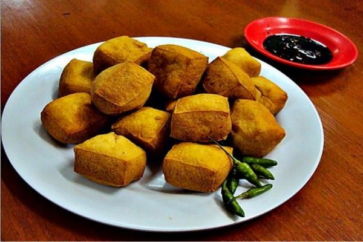

Sejarah
Sejarah Tahu pong sendiri terdapat 2 versi,versi 1 Versi pertama menyebutkan, tahu pong dibawa oleh para pedagang Cina ke Semarang yang masa itu memiliki salah satu pelabuhan terbesar di Nusantara sekitar tahun 1960-an.Nama "pong" dipercaya diambil dari kata "Phong" bahasa Mandarin yang berarti menggelembung. Versi 2 menyebutkan bahwa tahu pong merupakan ciptaan orang Jepang. Di Jepang sendiri, jenis tahu ini disebut dengan abura-age atau pocket tofu. Memasak tahu dengan cara digoreng seperti tahu pong, memang lebih banyak ditemukan di Jepang dibanding Cina. Dalam versi Jepang, nama tahu pong berasal dari tahu Je-pun atau Nippon sebutan lain dari Jepang. Sejarah tahu pong yang berasal dari Jepang diperkuat dengan penyajiannya yang didampingi dengan acar lobak Daikon khas Jepang.
Cara Membuat Makanan Gandos Sederhana
Bahan yang perlu di siapkan
bungkus tahu putih
Secukupnya air
1 sdt kaldu jamur
10 sdm tepung bumbu serbaguna
200 ml air
Secukupnya minyak goreng
Langkah pembuatanya
Potong setiap tahu menjadi 4, kemudian rendam dengan 1 sdt kaldu jamur dan air secukupnya, diamkan minimal 10 menit.
Panaskan minyak goreng, goreng tahu sampai matang, kemudian tiriskan.
Dalam wadah lain, larutkan tepung bumbu serbaguna dengan air. Kemudian aduk, celupkan tahu goreng, lalu goreng sampai matang kecoklatan.
Tiriskan tahu, kemudian sajikan dengan petis atau sambal kecap, bisa juga saus sambal.